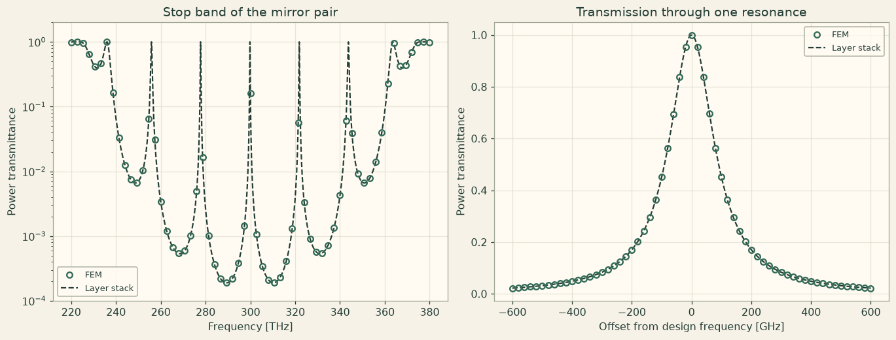
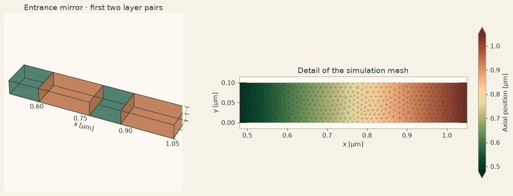

Docs › Examples › Resolving a resonance between Bragg mirrors
Wave optics · 2D
Resolving a resonance between Bragg mirrors
Two dielectric mirrors enclose an air gap. A two-dimensional Maxwell frequency sweep resolves the narrow transmission line inside their stop band.
Run locally with OneSimulation. The example downloads are free. Running them requires an activated runtime. Runtime Alpha 0.2.1a8 · CPython 3.13 on macOS (Apple Silicon), Ubuntu 22.04 (x86-64), and Windows x64. Installation and activation · View pilot plans. Scope of the reference checks.


What it computes
Five pairs of quarter-wave layers form each mirror. A plane wave enters the periodic strip through a Floquet port. Two frequency sweeps compare the finite element transmission with the transfer matrix of the entire stack. The script that builds the STEP files comes with the notebook.
What it checks
With the same 122 frequencies, refining 5,114 to 12,706 triangles (3,003 to 7,062 vertices) reduces the maximum absolute transmittance error from 0.001309 to 0.000161. The central mode peaks at 299.7925 THz. Its sampled linewidth is 182.4 GHz on both meshes, against 181.2 GHz from the layer stack.
Geometry
Save the STEP files fabry_perot_bragg_mirror_resonator.step, fabry_perot_bragg_mirror_resonator_high.step, fabry_perot_bragg_mirror_resonator_low.step next to the notebook before running it.


The geometry script
The script fabry_perot_bragg_mirror_resonator_geometry.py builds the geometry with the CAD objects of OneSimulation and writes the files. Change a dimension there, run it, and run the notebook again.
"""Geometry of the OneSimulation example "Fabry-Perot resonator with Bragg mirrors".
Builds with the CAD objects of OneSimulation, drawn in micrometres as thin plates, a strip 0.1 um wide
(y) along the optical axis x: air from x = 0 to 0.5, a Bragg mirror of five pairs of quarter-wave
layers for 1 um (titanium dioxide, n = 2.4, 104.2 nm; silica, n = 1.45, 172.4 nm), an air gap of 5 um,
the mirror in reverse order and 0.5 um of air. Files: fabry_perot_bragg_mirror_resonator.step (the strip,
faces x_min and x_max are the ports, y_min and y_max the periodic sides),
fabry_perot_bragg_mirror_resonator_high.step and ..._low.step (the layers of each material).
"""
from onesim.cad.d3 import Box
width, depth, design, pairs, gap, lead = 0.1, 0.05, 1.0, 5, 5.0, 0.5
high, low = design / (4 * 2.4), design / (4 * 1.45)
mirror = [high, low] * pairs
layers = mirror + [gap] + mirror[::-1]
x, slabs = lead, {"high": None, "low": None}
for index, thickness in enumerate(layers):
kind = "high" if thickness == high else ("low" if thickness == low else None)
if kind:
slab = Box(length=thickness, width=width, height=depth, origin=(x, 0.0, 0.0))
slabs[kind] = slab if slabs[kind] is None else slabs[kind] | slab
x += thickness
Box(length=x + lead, width=width, height=depth).save("fabry_perot_bragg_mirror_resonator.step")
for kind, solid in slabs.items():
solid.save(f"fabry_perot_bragg_mirror_resonator_{kind}.step")The notebook
The complete notebook, cell by cell. Run it to produce the figures and the comparison printout.
Two mirrors confine light in a 5 µm air gap. Each mirror has five alternating quarter-wave layers of titania and silica, designed for 1 µm light. A broad scan finds the stop band. A second scan measures the width of a single transmission line within it.
Reference. Born and Wolf, Principles of Optics, §§1.6 and 7.6. The transfer matrix of the lossless layer stack gives an independent normal-incidence spectrum. All frequencies below are ordinary frequencies.
import numpy as np
from scipy.signal import find_peaks
from onesim.cad.d3 import Box
from onesim.cad.exchange import load
from onesim.materials import VACUUM_PERMEABILITY, VACUUM_PERMITTIVITY
from onesim.materials.electromagnetic import (
CoherentOpticalStack, IsotropicElectromagneticMaterial, OpticalLayer, RegionwiseElectromagneticMaterial,
)
from onesim.meshing import PeriodicPair, TriangularMesher, scaled
from onesim.numerics import Numerics
from onesim.numerics.fem import FiniteElement, Lagrange
from onesim.numerics.linear import ComplexSparseDirect
from onesim.physics.electromagnetics import BlochPeriodicBoundary, FloquetPort, FrequencyDomainMaxwell, diffraction_efficiencies
from onesim.simulation import Problem, Simulation
from onesim.visualization import plots, theme
theme.set()Mirror geometry and mesh
The three STEP files use micrometres. A common section cuts the strip and the mirror layers. Matching periodic boundaries along its long edges represent mirrors of infinite transverse extent. The target edge length is 12.5 nm, about one eighth of the thinnest 104 nm layer. Refining from 20 nm increases the mesh from 5,114 to 12,706 triangles (3,003 to 7,062 vertices).
stem = "fabry_perot_bragg_mirror_resonator"
strip = load(stem + ".step").section((0, 0, 1), origin=(0, 0, 0.025))
indices = {"high": 2.4, "low": 1.45}
parts = {name: load(f"{stem}_{name}.step") for name in indices}
layers = [s.named(name) for name, part in parts.items() for s in part.sections((0, 0, 1), origin=(0, 0, 0.025))]
mesh = scaled(TriangularMesher(target_size=0.0125, embedded_regions=tuple(layers),
hard_sizes={"y_min": 0.0125, "y_max": 0.0125}).generate(strip), "um")
print(f"Mesh: {mesh.cell_count:,} triangles, {len(mesh.coordinates):,} vertices")
window = Box(length=0.55, width=0.1, height=0.05, origin=(0.5, 0, 0))
fig = plots.figure(1, 2, size=(12, 4.3))
plots.geometry([(part & window).named(name) for name, part in parts.items()],
camera=plots.Camera(elevation=35, azimuth=-65), labels=False,
title="Entrance mirror · first two layer pairs", length_unit="um", drawing_unit="um", ax=fig[0])
x, y = mesh.coordinates[:, :2].T * 1e6
plots.heatmap(x, y, x, triangles=mesh.cells, edges=True, xlimits=(0.48, 1.05), ylimits=(-0.015, 0.115),
limits=(0.48, 1.05), xlabel="x [µm]", ylabel="y [µm]", label="Axial position [µm]",
title="Detail of the simulation mesh", ax=fig[1])
plots.show()Sweep the two-dimensional Maxwell model
An input port launches a normally incident wave. The opposite port measures transmitted power. Bloch periodicity with zero phase shift closes the transverse boundaries.
speed = 1 / np.sqrt(VACUUM_PERMEABILITY * VACUUM_PERMITTIVITY)
center = speed / 1e-6
broad = np.linspace(220e12, 380e12, 61)
narrow = center + np.linspace(-0.6e12, 0.6e12, 61)
sides = strip.boundaries
pair = PeriodicPair(sides.y_min, sides.y_max)
material = RegionwiseElectromagneticMaterial({name: IsotropicElectromagneticMaterial(relative_permittivity=n**2)
for name, n in indices.items()}, default=IsotropicElectromagneticMaterial())
numerics = Numerics(spatial=FiniteElement(element=Lagrange(order=2)), linear_solver=ComplexSparseDirect())
power = []
for frequency in np.r_[broad, narrow]:
wave = FrequencyDomainMaxwell(domain=strip.domain(), frequency=frequency, material=material, polarization="Ez",
phasor_convention="exp(-i*omega*t)", amplitude_convention="peak")
boundaries = (BlochPeriodicBoundary(physics=wave, pair=pair, wavevector=(0, 0, 0)),
FloquetPort(physics=wave, boundary=sides.x_min, incident_amplitude=1.0),
FloquetPort(physics=wave, boundary=sides.x_max))
problem = Problem(name="Bragg cavity", geometry=strip, physics=(wave,), boundary_conditions=boundaries)
result = Simulation(problem=problem, mesh=mesh, numerics=numerics).solve_stationary()
power.append(diffraction_efficiencies(result, wave)[(1, 0)])
broad_power, line_power = np.split(power, [len(broad)])Spectrum and linewidth
A linear interpolation locates the two half-power crossings between sampled frequencies. Their separation is the full width at half maximum. The neighboring maxima of the independent transfer-matrix curve give the free spectral range.
mirror = [OpticalLayer(thickness=1e-6 / (4 * n), index=n) for n in indices.values()] * 5
stack = CoherentOpticalStack(layers=tuple(mirror + [OpticalLayer(thickness=5e-6, index=1.0)] + mirror[::-1]))
def reference(frequency):
return stack(speed / frequency, 1.0, 1.0, 1.0, polarization="s").transmitted
dense = np.linspace(220e12, 380e12, 40001)
spectrum = reference(dense)
peaks = dense[find_peaks(spectrum, height=0.8)[0]]
nearest = np.argmin(abs(peaks - center))
spacing = peaks[nearest + 1] - peaks[nearest]
detail = np.linspace(narrow[0], narrow[-1], 6001)
for label, values in (("OneSimulation FEM", np.interp(detail, narrow, line_power)), ("Transfer matrix", reference(detail))):
left, right = detail[values >= values.max() / 2][[0, -1]]
width = right - left
print(f"{label}: peak {detail[values.argmax()] / 1e12:.4f} THz, FWHM {width / 1e9:.1f} GHz, finesse {spacing / width:.1f}")
print(f"Maximum absolute transmittance error over both sweeps: {max(abs(np.r_[broad_power, line_power] - reference(np.r_[broad, narrow]))):.4g}")
fig = plots.figure(1, 2, size=(12, 4.5))
plots.line(points={"FEM": (broad / 1e12, broad_power)}, reference={"Layer stack": (dense / 1e12, spectrum)},
scale="logy", ylimits=(1e-4, 2), xlabel="Frequency [THz]", ylabel="Power transmittance",
title="Stop band of the mirror pair", legend="lower left", ax=fig[0])
plots.line(points={"FEM": ((narrow - center) / 1e9, line_power)}, reference={"Layer stack": ((detail - center) / 1e9, reference(detail))},
xlabel="Offset from design frequency [GHz]", ylabel="Power transmittance",
title="Transmission through one resonance", legend="upper right", ax=fig[1])
plots.show()